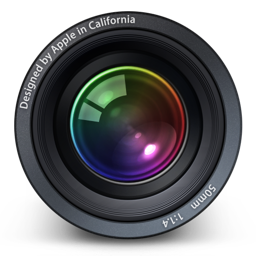

<html>
	<head>
		<link rel="stylesheet" href="css/style.css">
	</head>
	
	<video id="video"></video>
	<!--<button id="startbutton">Take photo</button>-->
	<!--<canvas id="canvas"></canvas>-->
	<!---->
<script src="js/webrtc.io.js"></script>
	<script>

  // note: make sure hostname available to all connecting clients
  // (ie. probably not `localhost`)
  alert("before connection");
  rtc.connect('ws://127.0.0.1:8001');
  alert("after connection");


  rtc.createStream({"video": true, "audio":false}, function(stream){
    // get local stream for manipulation
    rtc.attachStream(stream, 'local');
  });

  rtc.on('add remote stream', function(stream){
    // show the remote video
    rtc.attachStream(stream, 'remote');
  });

  // more rtc callbacks are available
</script>

	<!-- webRTC script for video stream-->
	<script type="text/javascript" src="js/video.js"></script>

</html>